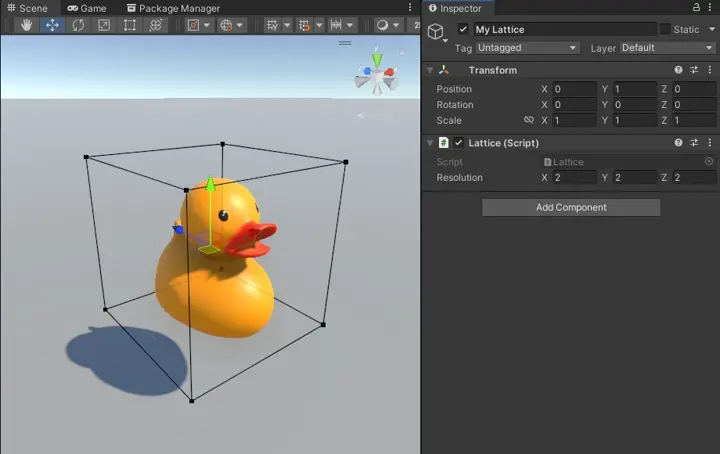
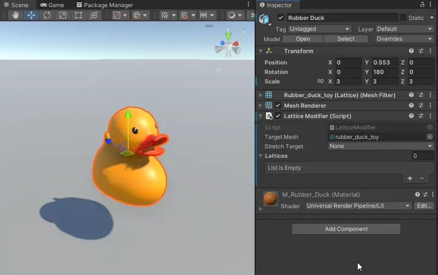
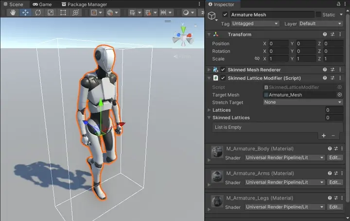

Components
Lattice
Lattices are the 3d grid used to control deformations. Take a look at using Lattices for guides on editing, animating and scripting Lattices.

Lattices have the following properties:
- Resolution
The number of handles across each axis.
Lattice Modifier
Lattice Modifiers allow static meshes to be affected by Lattices. Lattice Modifiers must be added to GameObjects with a MeshFilter and MeshRenderer. You can apply multiple Lattices to a Lattice Modifier.

Lattice Modifiers have the following properties:
Target Mesh
The mesh used on the attachedMesh Filtercomponent. This field will be automatically filled in when added to the GameObject.Apply Method
How Lattices are applied to the mesh.Position
Vertex position only. Cheaper than deforming the normal and tangent as well, but not as visually accurate.Position, Normal and Tangent
Deforms vertex position, normal and tangents.Stretch
Deforms position, normal and tangent, and calculates the amount of squash and stretch and stores it in the UV channel chosen inStretch Channelbelow.
Stretch Channel
The UV channel to store squish and stretch in to. Only acccessible ifApply Methodis set toStretch.Update Mode
How often the Lattices are applied. You can change this at runtime with the propertyUpdateMode. Can choose from the following options:Manual
Only applied on start, or ifRequestUpdate()is called on the component.When Visible
Updates every frame when theMeshRendereris visible.Always
Updates every frame.
Lattices
The Lattices to apply to this modifier. Each has the following additional properties:High Quality
Increases the quality of deformation, but uses more computation. Take a look at the Quality sample for an example of the visual difference.Global
Will continue to apply deformations outside of the Lattice. If disabled, deformations are restrained to near the Lattice.
Skinned Lattice Modifier
Skinned Lattice Modifiers allow skinned meshes to be affected by Lattices. Skinned Lattice Modifiers must be added to a GameObject with a Skinned Mesh Renderer. You can apply multiple Lattices to a Skinned Lattice Modifier, and choose to apply them before or after skinning.

Skinned Lattice Modifiers have the following properties:
Target Mesh
The mesh used on the attachedSkinned Mesh Renderercomponent. This field will be automatically filled in when added to the GameObject.Apply Method
How Lattices are applied to the mesh.Position
Vertex position only. Cheaper than deforming the normal and tangent as well, but not as visually accurate.Position, Normal and Tangent
Deforms vertex position, normal and tangents.Stretch
Deforms position, normal and tangent, and calculates the amount of squash and stretch and stores it in the UV channel chosen inStretch Channelbelow.
Stretch Channel
The UV channel to store squish and stretch in to. Only acccessible ifApply Methodis set toStretch.Update Mode
How often the pre-skinning Lattices are applied. The Skinned Lattices are not affected by this option, and are updated whenever skinning is updated. You can change this at runtime with the propertyUpdateMode. Can choose from the following options.Manual
Only applied on start, or ifRequestUpdate()is called on the component.When Visible
Updates every frame when theSkinnedMeshRendereris visible.Always
Updates every frame.
Lattices
The Lattices to apply before skinning. Each has the following additional properties:High Quality
Increases the quality of deformation, but uses more computation. Take a look at the Quality sample for an example of the visual difference.Global
Will continue to apply deformations outside of the Lattice. If disabled, deformations are restrained to near the Lattice.
Skinned Lattices
The Lattices to apply after skinning. They have the same additional properties as the other Lattice lists.
Tip
It can be hard to determine how Lattices applied before skinning affect your character, especially if their rig has moved from their bind pose.
A quick way to get a reference of their pre-skinning position is to create a child GameObject under your Skinned Mesh Renderer, add a Mesh Filter and Mesh Renderer, and copy the target mesh and materials across. This will display your character in their bind pose which you can use as reference.